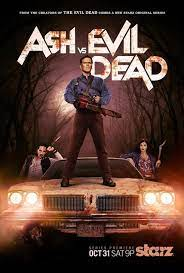

Dispnible en:
NetflixAsh vs evil dead
mini resumen:Ash, ahora de 50 años de edad, aun tiene su automóvil Oldsmobile Delta y vive en un remolque junto con su mascota Eli, una iguana cornuda. debe salir de su zona de confort y convertirse en héroe una vez más, cuando accidentalmente libera al Mal que amenaza con adueñarse de nuestro mundo. Ash cuenta con la ayuda de Pablo, un joven idealista, Kelly, una chica muy valiente y Amanda, una oficial de policía de Michigan,y juntos deben actuar de forma responsable para que los demonios del mal no posean las almas de las personas del mundo..
Créditos y reparto
| Creado por | Sam Raimi, Ivan Raimi, Tom Spezial |
| Productores | Robert Tapert,Chloe Smith Aaron Lam Rick Jacobson Sean Clements Dominic Dierkes |
| Compositor | Joseph LoDuca |
| País: | Reino Unido |
| Lugares de Producción: | Auckland | , Nueva Zelanda
| Fecha de estreno y finalizacion | 31 de octubre de 2015 hasta el 31 de octubre de 2015 |
| genero | Comedia de Terror, Sobrenatural |
| temporadas | 3 Temporadas con 10 caps cada una (30 capitulos en total) |
| Duración: de promedio | 31 minutos |
| Clasificación: | +18 (en la mayoria de los País:es) |